T2D/Mini Platformer Ninja Tutorial
|
Basic Platformer mechanics in 100 lines of script or lessThe premise of this tutorial is to provide a quick and painless set of steps to get basic platformer game mechanics in T2D in under 30 minutes and under 100 lines of script. Setting up the Project
To start, open up T2D (by clicking the T2D icon on your desktop). By default,
the Level Builder will start with the last project that was loaded. This makes it
really easy to pick up where you left off. If you have been playing around with
the Level Builder before reading this you will see whatever you worked on last.
To create a new project, select New Project… from the File menu. When you do this, the New Project dialog will appear. For the purposes of this tutorial we will call this project "miniPlatformer" (Figure 1.2). This will bring up the level builder (Figure 1.3). 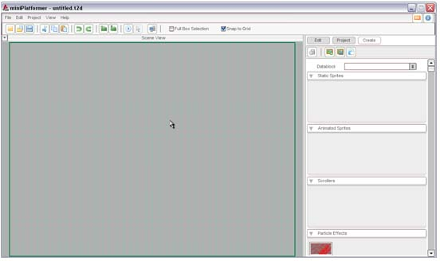 Figure 1.3Now save the project, this will create the projects directory structure inside your T2D/games folder. You will be prompted to save your level even though you haven't added anything yet. Save the level as "level1.t2d"(figure 1.4). 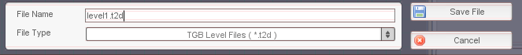 Figure 1.4Importing ArtIt's time to start adding the content we will use in our platformer. Because we are trying to keep things simple we will only add two image files to the project. Copy the following two images to your ~MyGames/miniPlatformer/game/data/images folder (Figure 2.1) (Figure 2.2) 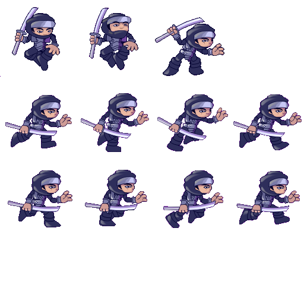Figure 2.1 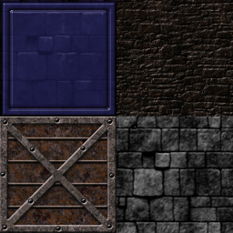Figure 2.2 With that done we are now ready to import those images into the LevelBuilder. Click the "Add ImageMap" icon on the right sidebar (Figure 2.3). You will be prompted to pick between the two images we added to our images folder. Select MiniTileMap.png file from the list. You will see a preview of it in the right panel of the dialog (Figure 2.4). Click the Select button to bring up the Image Builder dialog. 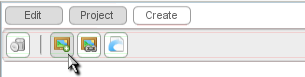Figure 2.3 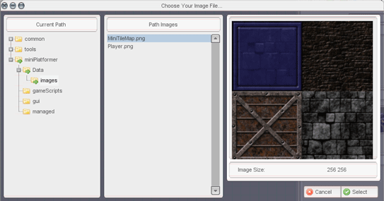Figure 2.4 On the Image Builder dialog change the Image Mode to CELL, you'll notice how this nicely separates the tiles into four separate chunks (Figure 2.5). This will be important later when we go to build our tile map. 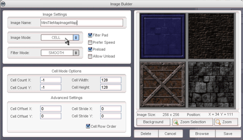Figure 2.5 Repeat the process for Player.png, adding it as a new image map and then picking "CELL" for the Image Mode. You'll notice that things don't look exactly right this time. It appears that there are four player images per cell. To fix that we need to edit the "Cell Width" and "Cell Height" properties so they both read "128" (Figure 2.6). 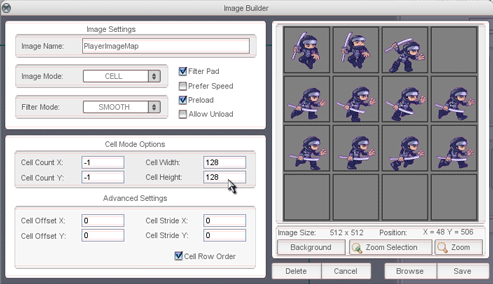Figure 2.6 Creating AnimationIn this section we will create four animations for our player from the playerImageMap. They are:
Some of these animations will only have one frame, but you will see how we could easily add more. Lets start with the Run animation since it's the most interesting. Start by clicking the Add Animation icon (Figure 2.7). On the Select Source dialog that appears choose the PlayerImageMap (Figure 2.8). After that you will be presented with the animation builder dialog. Here you can drag frames from them imageMap and onto an animation time line. 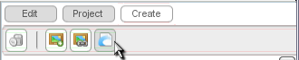Figure 2.7 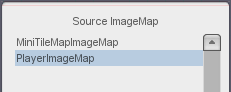Figure 2.8 Drag frames 4 to 11 from the imageMap onto the animation timeline, one after the other. When you have finished you should have something that looks like (Figure 2.9). Preview the animation to see if it seems intact and then save the animation as "playerRun". 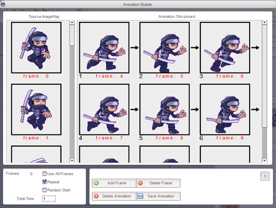Figure 2.9 The remaining animations are built in the same way except that they only have one frame of animation (in your own project you could add more). The list below shows what animations to create and what frames to assign them.
Create the remaining 3 single frame animations. When you are done your Animated Sprites rollout should look something like (Figure 2.10). 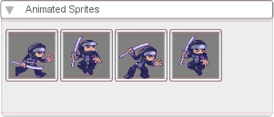Figure 2.10 Building a levelNow we will build a simple tileLayer for our level. Drag and drop the newLayer.lyr object from the Tile Maps rollout and onto our scene. (Figure 3.1) Once you've placed it on the scene we'll have to customize it a little to make it work with the rest of our art. 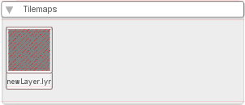Figure 3.1 With tileLayer selected in the scene and click the Edit button on the right sidebar we want to edit the TileSize properties of the Tile Map. Set the X and Y Tile Size properties to 32(Figure 3.2) this will make the tiles large enough to work well with our player art. It's easier to resize the entire tile map then it is to individually resize each player animation.
(Figure 3.3) and (Figure 3.4) show the tileLayer before and after setting the Tile Size. Now we have a tile layer but it appears to be only big enough to hold one tile. We need to resize the TileLayer to cover the screen area. Using the blue control boxes, reposition and resize the tile layer larger then our camera's view. You can use the mouse wheel to zoom the scene view in and out to get enough room to resize the tile layer. Once your done your scene should look something like (Figure 3.5). 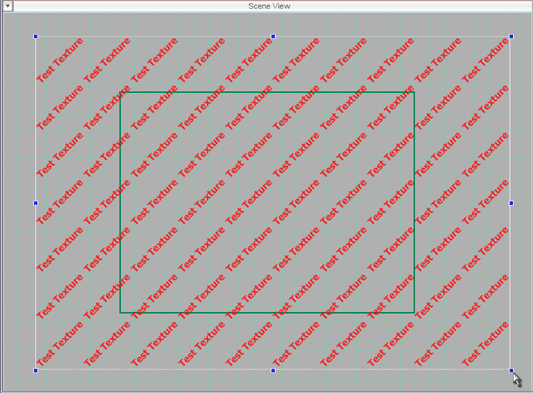Figure 3.5 (Figure 3.3) and (Figure 3.4) show the tileLayer before and after setting the Tile Size. It's time to explore T2D's Tile Map editor. Hover your mouse over the tile layer in our scene until the set of action buttons appears at it's top left corner. Click the Edit Tile Map button (Figure 3.6). This will bring up the Tile Editor in the right sidebar(Figure 3.7). 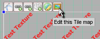 Figure 3.6 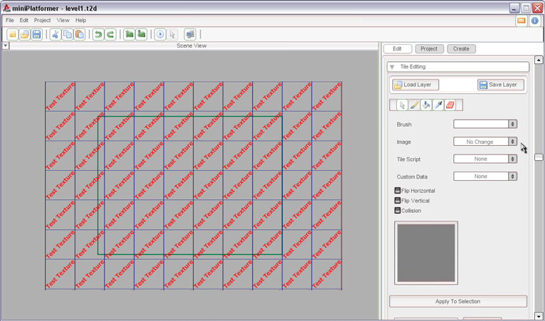Figure 3.7
From the Image drop down select MiniTileMapImageMap. Notice how a small "Frames"
button appears below the image drop down showing 0 (Figure 3.8) This means that
MiniTileMapImageMap contains multiple tiles. By default the first tile in the ImageMap
is displayed on the right sidebar.
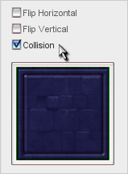
To do this erase the background tiles we placed before and leave those tiles
transparent, as in (Figure 3.15). Creating a Player
The majority of the rest of the tutorial is going to be spent scripting the actions
that will make our platformer work. But before we do that we need to add an object
to our scene that will be the starting point for our player. From the Animated Sprites
flyout on the right sidebar drag the "playerStand" animation out onto the level.
Try to position it as if the player was standing on a platform tile as shown in
(Figure 4.1).
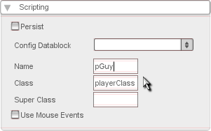
Now we need to turn on some collision detection on our player object, to do this
edit the settings of the "Collision" rollout so that they look like the following
(Figure 4.3).
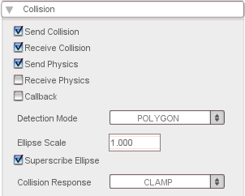 With that done we are now ready to begin scripting the movement for our player object. Keyboard Input
It's time to write a script that will control the actions of our player. In your
"~s/miniPlatformer/gameScripts" folder create a file named player.cs.
Open this file with a text editor and add the following function at the beginning
of the file. function playerClass::onLevelLoaded(%this, %scenegraph)
{
$pGuy = %this;
moveMap.bindCmd(keyboard, "left", "playerLeft();", "playerLeftStop();");
moveMap.bindCmd(keyboard, "right", "playerRight();", "playerRightStop();");
moveMap.bindCmd(keyboard, "space", "playerJump();", "");
}
The playerClass::onLevelLoaded() function is called whenever an object with a class
type of "playerClass" is loaded into the scene. If you recall when we were editing
the Scripting properties of our player we set the Class name to "playerClass". That
means when T2D loads our level with our player animation it will call this function.
The first line of the function stores a reference to the object being loaded to
a global variable named $pGuy that we can use to reference the player in other functions.
Next you can see we are binding the left and right arrow keys as well as the spacebar,
when these keys are pressed or released they call their corresponding functions.
For example when the the left arrow key is pressed, the "playerLeft()" function
will be called, when it is released the "playerLeftStop()" function will be called.
We can use these functions to track what the player should be doing. Let's add those key handler functions now. function playerLeft()
{
$pGuy.moveLeft = true;
}
function playerLeftStop()
{
$pGuy.moveLeft = false;
}
function playerRight()
{
$pGuy.moveRight = true;
}
function playerRightStop()
{
$pGuy.moveRight = false;
}
function playerJump()
{
}
Here we are using that $pGuy variable we initialized in the first function to store
the movement state of the player. Just by using the .moveRight and .moveLeft members
on the $pGuy object we are adding them to it's definition so that we can use them
later. Player Movement
Great! now we are tracking the keystates, but that doesn't really get us anywhere
in terms of a game. We need our player to respond to those keystates and MOVE!
Below our key handlers in the player.cs file, lets add a movement handler function. function playerClass::updateMovement(%this)
{
if(%this.moveLeft)
{
%this.setLinearVelocityX(-60);
}
if(%this.moveRight)
{
%this.setLinearVelocityX(60);
}
if(!%this.moveLeft && !%this.moveRight)
{
%this.setLinearVelocityX(0);
}
}
You'll notice our function is named with "playerClass::" this means that this function
will work with any object who's class is "playerClass". What it does is check the
state of the moveLeft and moveRight class members and assigns a linear velocity
to the object if it finds either to be true. If neither left nor right are pressed,
we want to be sure to stop the player from moving. To do this we set the x velocity
to 0. Previously we created a playerJump( ) function but it didn't do anything, let's now edit that function and add the following line. function playerJump()
{
$pGuy.setLinearVelocityY(-225);
}
Now what happens is any time you press the jump button your player will be given
a Y velocity straight up, with considerable force. Now for the final step, we want to continuously be adjusting the direction our player is moving based on what the state of the keys are in. To do this we need to be calling our updateMovement( ) function all the time. Add the following function to the end of our player.cs file. function t2dSceneGraph::onUpdateScene()
{
$pGuy.updateMovement();
}
This handles the updateScene event of the t2dSceneGraph, the basic object responsible
for managing our game's appearance. Every time it updates we want our updateMovement()
method to be called so we add it here. We are just about ready to test our movement code for the first time, but first we need to tell T2D to load our player.cs file when we run the game. To do that locate the game.cs file in the same folder as your player.cs file. Open the game.cs file and add the following line at the top startGame function. exec("./player.cs");
In order for T2D to load the file the first time it will have to be restarted. Save
your work if you havn't already and re-open the miniPlatformer project. Once
you've done that you are ready to test your code. To try out your demo level hit
the "Play" button in T2D (Figure 5.1).
After playing around you'll notice some things are not quite right. The player slides
left and right, but he doesn't seem to be falling. Then if you jump he just flys
off the screen and never returns. It seems like we need to add some gravity to pull
him down to earth. Fortunately T2D has a built in physics system to handle these
kinds of things. Select your player and go to the edit tab on the side bar, edit
the physics rollout settings so they look like the following (Figure 5.2).
You'll notice the Constant Force Y has been set to 100, this applies a 100 unit
force down on our player all the time. This acts like gravity pushing him back down
after he jumps up. It's also what pushes him down when he walks off the edge of
a platform. Force Scale just increases the affect of the gravity on the player making
the equation a little less floaty and a little more like a jump. You can play with
these until you get them how you like. Go ahead and test the level.
Right off the bat you notice that your player object settles nicely onto the floor
when the level starts. Then when you jump or walk off a platform he falls back down
to earth like you would expect. But other weird things have started to happen, sometimes
it feels like the player is walking though mud and when you walk into a corner the
player bounces around oddly and can get stuck. The reason for this is that T2D has
a very sophisticated physics model, it simulates friction and all kind of other
forces that we really don't want to handle. We really want the gravity physics to
work for us when the player object is in the air, but not when it is on the ground
walking around.
To fix this we are going to have to do a little scripting, but you'd be suprised
at how easy it is to fix. Open up the player.cs file and go to the updateMovement function. Append the following code to the end of the updateMovement function %yVelocity = $pGuy.getLinearVelocityY();
$pGuy.setLinearVelocityY(100);
%collision = $pGuy.castCollision(0.005);
$pGuy.setLinearVelocityY(%yVelocity );
if(%collision $= "")
{
$pGuy.setConstantForceY(100);
}
else
{
$pGuy.setConstantForceY(0);
}
The first thing we do is store the players current Y velocity in a local variable
(delineated by the percent sign in front of yVelocity ), then we set the Y velocity
of the player as stright down with 100 units of speed. We do this so that we can
use the castCollision () function to check and see if we are colliding with something
directly below us. In our case the floor or a platform. castCollision takes a single
parameter that defines how far in the future to check. Because we want to use this
collision test to decide when to turn of gravity, we use a very small unit of time.
This means that castCollision will only return a collision if we are VERY close
to the ground or a platform. Once we castTheCollision we restore the previous Y
velocity of the player but store the collision results in %collision
If there is no collision resulting from castCollision() we know its time to turn
on gravity because there's no floor beneath our feet. To do this we set the Constant
Y force to 100. If we do find a collision, we know we are on solid ground and we
turn off gravity by setting the Constant Y force to 0.
Now go and test the level.
Perfect! well almost. You'll notice if you are pressing up against a wall when you
jump, your player still exhibits those friction like effects slowing down his jump.
This is a side effect of the physics system optimizing for performance. Sometimes
it can get a little sloppy in it's calculations and that shows up when two objects
get really close. For a lot of game system this would be a major bug, but T2D provides
an easy way for us to tell the physics on the player to be a little more careful. Open up the player.cs file again and locate the playerClass::onLevelLoaded function. At the end of this function append the following line of code. $pGuy.setCollisionMaxIterations(2);
This tells the physics to check a little more carefully when calculating collisions
on our player. Go ahead and test the level again.
Awsome, now the guy his hopping around and there's no stickyness. Time to get the
screen to scroll with our player. If you press the space bar (to jump) while you are in the air you will continue to jump. Also, if you are running at a wall while in the air you will be able to double jump. To change this, use the following code: function playerJump()
{
%yVelocity = $pGuy.getLinearVelocityY();
%xVelocity = $pGuy.getLinearVelocityX();
$pGuy.setLinearVelocityY(100);
$pGuy.setLinearVelocityX(0);
%collision = $pGuy.castCollision(0.005);
if(!(%collision $= ""))
{
$pGuy.setLinearVelocityY(-225);
}
else
{
$pGuy.setLinearVelocityY(%yVelocity);
}
$pGuy.setLinearVelocityX(%xVelocity);
}
Now when you press the spacebar to jump it checks to see if you have ground beneath
you before you jump. Scrolling CameraNormally a topic like this would require it's own section, so I gave it one to make it easy to find from the table of contents. But the fact of the matter is that T2D makes scrolling the camera really easy. All we have to do is mount the camera to our player and that can be done with a single line of code. We'll do it in two for clarity's sake. add the following lines of code to the end of onLevelLoaded() %force = 20; sceneWindow2D.mount($pGuy, "0 0", %force, true);
Here we are telling the sceneWindow2D object to mount on our player $pGuy. "0 0"
are the x and y offsets of that mount, and %force is the force that can be exerted
pulling the camera around. We set it to 20, but you could set whatever you want.
Higher numbers means the camera will follow the player around, smaller numbers mean
it will stick very rigidly to the player.
Go ahead and test the level, you should find the camera moving nicely with the player. Animating the PlayerSo now that we have all the mechanics working, it's time to make our player animate. He looks kinda dumb running around the level in his stand frame facing right. The first thing to do is to make sure our guy faces the direction he is moving. To do this we will modify the playerLeft( ) and playerRight( ) functions. add a call to setFlip() in both playerLeft() and playerRight() function playerLeft()
{
$pGuy.moveLeft = true;
$pGuy.setFlip(true, false);
}
function playerRight()
{
$pGuy.moveRight = true;
$pGuy.setFlip(false, false);
}
setFlip flips the orientation of our player object in the X and Y directions. When
we are moving to the left we want to flip the art since all our art is facing right.
When we move to the right we want to undo that flip so we call setFlip again with
false to undo it.
Test the level again to verify your changes.
Cool, he's starting to feel a little more alive now, a little more like a game.
Lets add the run animation. Add the following function to the player.cs file right above function t2dSceneGraph::onUpdateScene() function playerClass::setCurrentAnimation(%this)
{
if(%this.moveLeft || %this.moveRight)
{
if(%this.getAnimationName() $= "playerRun")
{
if(%this.getIsAnimationFinished())
{
%this.playAnimation(playerRun);
}
}
else
{
%this.playAnimation(playerRun);
}
}
else
{
%this.playAnimation(playerStand);
}
}
This function well set the active animation on our player based on the state of
the player objects moveRight and moveLeft member variables. First the function checks
to see if the player is moving right or left. If the player is moving left or right,
it checks to see if the "playerRun" animation is already playing. If the animation
is already playing it waits for it to finish before it tells it to play again. If
the player is playing some other animation then it immediately tells the run animation
to start. Finally if the player is not moving left or right, the function sets the
player to play the playerStand animation. We need to call this function from somewhere however, locate the following line of code in the playerClass::updateMovement function %yVelocity = $pGuy.getLinearVelocityY(); Below that line add a call the playerClasses setCurrentAnimation() function by adding the following $pGuy.setCurrentAnimation();
Now you can play your level and see your guy running around.
It's really starting to look good, but the player looks a little weird running in
the air when he jumps. We'll have to add some script to display the jump animations
we've created. (even if they are just one frame each).
In order to add jump animations we could set a state in our startJump() function
and handle it in our set current animation, but then we would have to check the
Y velocity of the player to see if we were jumping up and down and set the proper
animation. Since the jump state is the player is represented by it's Y velocity,
lets just use that to determine what animation to show. Modify the playerClass::setCurrentAnimation(
) function to take an additional variable named %yVelocity, when you are
done it should look like the following function playerClass::setCurrentAnimation(%this, %yVelocity)
if(%yVelocity < 0 )
{
%this.playAnimation(playerJumpUp);
}
else
{
(the exsisting setCurrentAnimation code goes here)
}
if(%yVelocity < 0 )
{
%this.playAnimation(playerJumpUp);
}
else if(%yVelocity > 0 )
{
%this.playAnimation(playerJumpDown);
}
else
{
(the exsisting setCurrentAnimation code goes here)
}
$pGuy.setCurrentAnimation(); and modify it so that we pass it the %yVelocity of the player. $pGuy.setCurrentAnimation(%yVelocity);
If you performed the optional step when creating the level your platformer should
look something like this...
|